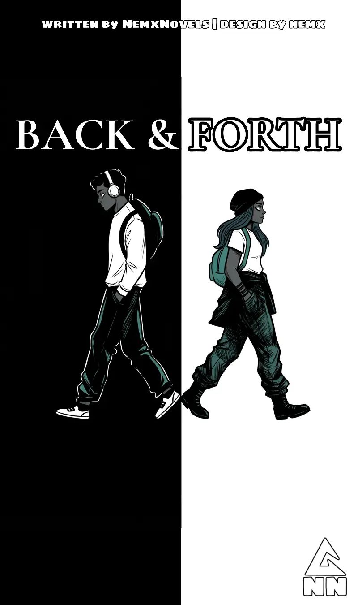

Why do you keep leaving me?
Am I boring you?
Are you cheating on me?
I'm sorry you had to think about it or I made you feel like I'm dating another guy. Maybe I'm lacking somewhere cause you should never have to go through that. I'm not sure how to reassure you, but I guess I'll do better.
You say there's no need to find another, when you have me - I always find that hard to believe.
Why am I with you?
If I love him?
Why do I love you?
I don't know, many possible reasons.
What made this come to you?
Be honest.
Cause there can be many reasons to love me and him at the same time, humans are weird.
Do you think about me all the time, everyday?
I do, but not always. You already know I overthink - I get frustrated and emotional a lot over small things.
Why do you want to know?
Because I want to be the only one you think about, the only one in your mind and heart.
Do you need constant reassurance that I'm yours?
Yes, I do. A lot more than you know. An hour shouldn't pass without any checkup on me.
Why?
Because I worry you will forget about me and find another. I worry you have left me and that you have stopped loving me.
I will not.
Do you wanna know something?
Yes, I do.
My love for you has got me feeling like I can become anything you want me to, even if you were using me this would be something I will always cherish. I love you enough to let you cheat just so I can kill him and take u back, enough that when you no longer love me, I will still love you and you will still belong to me.
Why are you telling me?
So you know if you left, you will still be there to me, cause you'd be alive.
Do you know what I love about you?
What?
That you don't find yourself beautiful even when you are, and that you don't think you are good enough for me, even when you are more than good enough.
Then I will never change that, darling.
Just 5 minutes of your time even when taking a shit, is enough to show you think about me.
Do you ever wonder how it would be like to be in love with someone who was perfectly made to be the perfect match for you?
I do, and I think it would be the most amazing thing, and I know that at times we will argue or fight and somehow fix things up without any damage.
What if I am that someone for you?
Then that would explain why I feel so alive when I'm with you.
Do you ever feel the need to be taken care of like you were a fragile child?
Thinking about it makes me think about mother love.
What about you?
I do feel like it at times and crave it too.
Is it involving any weird femdom?
It would be weird, if I said no.
Do you also feel the connection that I feel with you?
What connection do you mean?
The kind where I can feel what you feel just by being in your presence or reading a message from you, the connection that when you are lying I somehow know it's a lie, the type when you are not okay I too start feeling not okay - that type of connection.
I feel it too. It makes me understand you more and see you for who you are.
I wonder how many universes exist were me and you met and stayed together till death.
I wonder if this universe is one of those universes.
I hope it is one of those universes.
I'm not okay, when you are not here.
I'm not okay.
I'm not okay.
You wear me out.